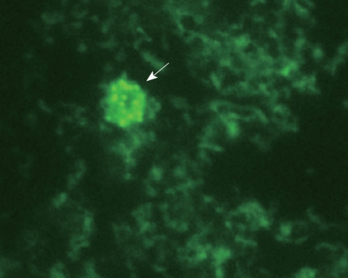

Bacterias (parte 4): Enfermedades autoinmunes
Complemento a la charla para T3chFest 2020
.jpg){kind=link}
Vamos a ver ahora un asunto controvertido. La relación con las bacterias no será inmediatamente evidente, así que te pido paciencia.
Las enfermedades autoinmunes ocurren cuando el sistema inmune ataca tejidos sanos del cuerpo por error. Este grupo de enfermedades incluye dolencias tan dispares como diabetes tipo I, enfermedad de Crohn, esclerosis múltiple o vitíligo. Muchas de ellas son crónicas, y casi todas incurables a día de hoy.
No se conoce la causa exacta de estas enfermedades; probablemente influyan factores ambientales y genéticos. Se sabe que varias de ellas tienden a ocurrir juntas, por ejemplo: vitíligo y enfermedad de la tiroide, o enfermedad de Crohn y diabetes tipo I.
Enfermedad de Crohn
Vamos a enfocarnos de momento en la enfermedad de Crohn, que me toca muy de cerca por tener a alguien en mi familia que la sufre. Se trata de una enfermedad inflamatoria intestinal crónica. Causa problemas digestivos severos, diarreas y pérdida de peso, y puede ser muy grave si no se trata.
El número de casos crece de forma alarmante en todo el mundo. Algunos ejemplos: Canadá, España o Taiwan. Los datos históricos desde 1930 siguen la misma tendencia. La incidencia se acerca peligrosamente al 1% de la población en ciertas regiones como Canadá o Australia.

¿Cuál es la causa de esta plaga moderna? Parece que el aumento de incidencia está asociado a la industrialización y urbanización de las sociedades. También se han identificado factores genéticos, casi todos relacionados con el sistema inmune y más en concreto con los macrófagos: esas células blancas responsables de aislar y comerse a las bacterias que están donde no debían. El gen CARD15 en concreto es responsable de identificar moléculas bacterianas, y sus mutaciones se asocian con la enfermedad de Crohn. Pero falta identificar el disparador: ¿por qué un individuo con estos factores genéticos pero aparentemente sano de repente desarrolla la enfermedad? ¿Qué mecanismo lleva a la inflamación intestinal?
Los únicos tratamientos efectivos ahora mismo son medicamentos inmunomoduladores, que deprimen el sistema inmune y a veces (no siempre) minimizan los síntomas. Los pacientes siguen siendo crónicos, pero al menos se pueden mantener sin brotes.
Tras la pista bacteriana
Puede ser interesante ver esta cita del libro del propio doctor Burrill Crohn en 1949, quien por cierto se negaba a usar su nombre para la enfermedad y prefería el término “ileitis”:
La enfermedad de Johne en el ganado tiene muchos parecidos con la ileitis humana en su configuración anatómica.
Se sabe desde 1912 que la enfermedad de Johne, o “paratuberculosis” como se la conoce también, está causada por una bacteria, modernamente conocida como Micobacterium avium subspecies paratuberculosis, o MAP para abreviar. Se trata de una micobacteria de crecimiento extremadamente lento, por lo que se necesitan cultivos de 16 semanas para detectarla. Produce unas lesiones en el intestino de los rumiantes conocidas como “granulomas”, muy similares a las lesiones pulmonares en la tuberculosis; de ahí el nombre de paratuberculosis.
Se ha identificado la paratuberculosis en ganado doméstico: vacas, cabras y ovejas. También en rumiantes salvajes. La incidencia de esta enfermedad ha crecido exponencialmente desde el siglo XIX. Además, múltiples estudios han identificado bacterias MAP viables en leche de vacas lecheras infectadas, incluso después de la pasteurización, y también en el agua del grifo.
¿Es posible que la bacteria pase del ganado a humanos, en un ejemplo más de transmisión zoonótica? Esta relación se ha buscado durante mucho tiempo, y lo cierto es que múltiples intentos de identificarla en enfermos de Crohn han fracasado. La bacteria no se ha encontrado en tejidos afectados por Crohn. Antes de seguir con esta cuestión vamos a ver otro caso, en principio no relacionado.
Úlceras y bacterias
La gente que no han vivido la epidemia de úlceras gástricas de las décadas de 1970 y 1980 no se hace una idea de su magnitud. Por poner un ejemplo, en Estados Unidos más del 1% de las hospitalizaciones eran debidas a úlcera gástrica. Un 10% de la población desarrollaba esta enfermedad incurable e intratable. Era habitual conocer a alguien que padecía esta enfermedad, que los médicos achacaban al exceso de ácidos gástricos, al estrés o a factores psicosomáticos. La recomendación: beber leche y tomar antiácidos, que representaban un negocio importante para las farmacéuticas.
En 1981 un joven doctor llamado Barry Marshall empezó a colaborar con otro médico, Robin Warren, quien sospechaba de un agente bacteriano. Entre los dos localizaron a Helicobacter pylori como el agente sospechoso de causar la úlcera. Nadie les creía, y en 1983 les rechazaron varias publicaciones.
En 1984 Marshall se bebió una preparación de H. pylori. En seguida empezó a notar los síntomas de una úlcera gástrica. A continuación se curó a sí mismo con una combinación que había descubierto él mismo: bismuto y metronidazol. Este dramático gesto fue lo que finalmente inclinó la balanza y convenció a la comunidad médica para empezar a mirar el asunto.
Hay que tener en cuenta que la resistencia era lógica: la úlcera se conocía desde la antigüedad, y achacarla a un agente bacteriano era un cambio de paradigma: ¿por qué nadie lo había encontrado antes? Pero también había una industria detrás de tres mil millones de dólares. Y no sólo en antiácidos: los gastroenterólogos tenían las consultas llenas de pacientes sospechosos de tener úlceras.
En 1989 el doctor Thomas Borody añadió tetraciclina a la mezcla de Marshall, consiguiendo la terapia que es estándar todavía hoy. En 2005 Marshall y Warren recibieron el premio Nobel de medicina.
No sólo se han curado la gran mayoría de las úlceras. La incidencia de cáncer de estómago ha bajado estrepitosamente. Todavía hoy la prevalencia de H. pylori es muy alta: en España se estima un 54% de población infectada. En su mayoría la gente que da positivo permanece asintomática durante toda su vida; los que desarrollan úlcera se tratan con éxito con distintas combinaciones de antibióticos según la resistencia de la cepa. Y no falta gente que echa de menos a la bacteria, ya que su ausencia supuestamente aumenta algunas patologías como asma o enfermedades del esófago.
Uniendo los puntos
Recapitulemos. Estamos buscando el culpable de la enfermedad de Crohn. Tenemos ya una sospechosa (nuestra amiga MAP), un móvil (transmisión zoonótica), y un modus operandi (bacterias haciéndose pasar por dolencias autogeneradas). Nos falta encontrar el arma humeante: bacterias en las lesiones de enfermos de Crohn.
Aquí es donde tenemos que investigar a fondo la coartada de la MAP. Resulta que esta fastidiosa bacteria tiene dos formas: la normal con pared celular normal y una forma alternativa “desnuda” o esferoplasto, En esta segunda forma la bacteria se deshace de esta cubierta, por lo que resulta imposible de detectar con la tinción estándar Ziehl-Neelsen. No es raro porque es un método optimizado para M. tuberculosis. Con los métodos adecuados sí se detecta, sin embargo, en muestras de sangre de pacientes de Crohn. Hay que decir que los cultivos tardaron 18 meses en dar resultados. Es una técnica demasiado lenta. Varios equipos de todo el mundo están trabajando en múltiples formas de identificar la MAP basadas en tests genéticos.
.
¿Qué ocurre con la medicación inmunosupresora, o inmunomoduladora como se llama ahora? ¿Por qué funciona? Se ha mostrado que el Metotrexate es efectivo in vitro contra la bacteria MAP. Por otra parte el Infliximab ataca a los macrófagos que albergan esta bacteria. Es de esperar que otros medicamentos tengan un efecto similar.
Terapias anti-MAP
Pero la prueba definitiva que puede convencer a la comunidad científica es un ensayo clínico de fase III. El nuevo medicamento se llama RHB-104: una combinación de antibióticos que ha mostrado su actividad in vitro contra la bacteria MAP. Tras el ensayo clínico se ha comprobado su eficacia en el tratamiento de la enfermedad de Crohn.
¿A quién encontramos tras esta terapia antibiótica? Al doctor Borody, el mismo de la formulación triple contra H. pylori.
Todavía hay mucho que mejorar: el RHB-104 sólo ha ayudado a la remisión en el 20% de los pacientes en un año. Habrá que ver si alargar los tratamientos (probablemente varios años más) aumenta ese porcentaje. Pero la postura por defecto ya no puede ser “autoinmune”: el éxito de los antibióticos es difícil de explicar sin cambiar de paradigma.
No es el único tratamiento en marcha. Ahora mismo las únicas vacunas existentes son para ganado, y no muy eficaces. El profesor Hermon-Taylor está trabajando en una vacuna contra la MAP en humanos, que está ahora en ensayos clínicos de fase II. ¡Crucemos los dedos!
Escepticismo al escepticismo
Llegados a este punto, y si fuéramos médicos o científicos de algún rigor, se haría necesario que decir que no todo el mundo está de acuerdo con esta teoría. En realidad la gran mayoría del establishment médico no lo tiene claro, o está directamente en contra. Eso no quiere decir que estén equivocados, pero tampoco que tengan razón; sólo que hacen falta pruebas más contundentes para convencerles.
Según la estructura de las revoluciones científicas de Kuhn, cada revolución lleva asociado un cambio de paradigma. ¿Estamos en esa fase ahora? La opinión de consenso es que al menos merece la pena investigar este asunto.
Otras enfermedades autoinmunes
El sistema inmune humano es muy complejo, y todo sistema complejo tiende a fallar de formas enrevesadas.
Más MAP
La diabetes tipo I, en particular, ocurre cuando el sistema inmune ataca y destruye los islotes pacreáticos. ¿Qué puede engañar de esta forma a nuestra complejísima maquinaria inmune? Hay estudios que relacionan a la bacteria MAP con la diabetes tipo I. El caso más claro es un estudio en Cerdeña un sitio con alta incidencia de esta enfermedad.
El mecanismo del que se sospecha es mímica molecular (molecular mimicry): una proteína de la bacteria MAP (HSP65) se parece mucho a la molécula pancreática humana glutamato descarboxilasa (glutamic acid decarboxylase), por lo que el sistema inmune las confunde y destruye el páncreas.
Se sospecha que la bacteria MAP puede estar implicada en otras enfermedades. Los resultados del RHB-104 contra la esclerosis múltiple son esperanzadores, lo que indicaría un origen micobacteriano claro. También hay estudios que relacionan otras micobacterias con la sarcoidosis, y con la tiroiditis de Hashimoto, aunque de forma más tangencial.
Más bacterias y algún virus
Aún hay más. El lupus vulgaris terminó siendo una tuberculosis cutánea. El otro tipo de lupus, lupus eritematoso sistémico, se considera autoinmune; se ha vinculado a biofilms generados por bacterias y a la infiltración de bacterias intestinales. Al parecer los biofilms son ricos en ADN extracelular, lo que dispara múltiples reacciones inmunes. Esto podría explicar la enfermedad.
Incluso la esclerosis lateral amiotrófica (ELA), la enfermedad de Stephen Hawking, tiene un sospechoso infeccioso: en este caso se trata de un enterovirus.
Podríamos seguir toda la tarde: ¿habrá que incluir en el grupo de enfermedades infecciosas otras dolencias que hasta ahora se clasifican en otras categorías? Está demostrado que sufrir infecciones en el últero aumenta al doble el riesgo de autismo, esquizofrenia y depresión. También sabemos que hay multitud de cánceres causados por infecciones. Por ultimo, hace unos dias se ha publicado una relacion entre autismo y sistema inmune.
La gran prediccion
Sin ser médico ni biólogo, ni querer parecerlo, me atrevo a lanzar la siguiente predicción:
Una gran proporción de enfermedades “autoinmunes” están causadas en realidad por infecciones bacterianas o víricas, que confunden al sistema inmune.
La idea general es la misma mímica molecular que en la diabetes tipo I, pero contra tejidos diversos: una infección ataca el organismo, que se apresta a preparar anticuerpos. Por desgracia algunos de estos anticuerpos atacan a las moléculas del propio organismo, por ser parecidas a las de los invasores.
Es algo similar a lo que ocurrió con la gripe española: el virus activaba las reacciones inmunes de los enfermos, motivo por el cual esta enfermedad se cebaba en la población más sana en lugar de ser más mortífera en infancia y vejez, como la gripe normal. El sistema inmune también parece que agrava la reciente COVID-19, aunque por un proceso diferente. Pero nadie califica estas enfermedades como “autoinmunes”.
Por ahora sólo queda esperar que las investigaciones continúen, tanto en Crohn como en el resto de enfermedades autoinmunes. Por desgracia curar enfermedades no es negocio; tratar enfermos crónicos sí. Es mi sincera esperanza que la sociedad recupere el espíritu curativo y se enfrente a este gran desafío que tenemos por delante.
Continuará…
Este artículo es la cuarta parte de la serie sobre bacterias. Sigue a la parte 5: ¿Venimos de las estrellas?, donde veremos en profundidad el enigma del origen de la vida.
- ← Parte 1: Y las bacterias, bonita.
- ← Parte 2: Tecnología bacteriana.
- ← Parte 3: El largo camino a la simbiosis.
- ↑ Parte 4: Enfermedades autoinmunes.
- → Parte 5: ¿Venimos de las estrellas?.
- → Parte 6: Conclusiones.
Publicado el 2020-01-16, modificado el 2020-01-16. ¿Comentarios, sugerencias?
Back to the index.